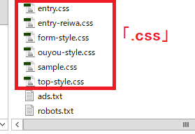
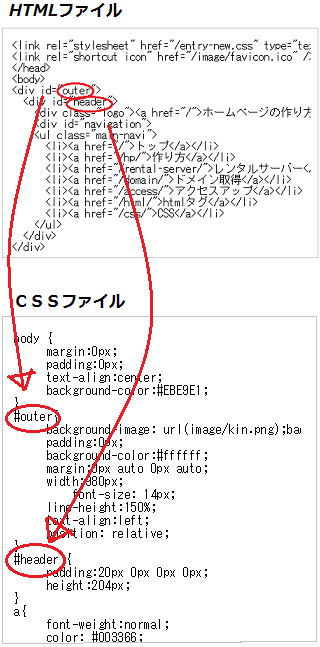

スタイルシートの作り方
スタイルシートを作成する際は以下の手順で作るとよいでしょう。
（１）拡張子「.css」にて、「任意の英数小文字.css」のファイルを作成
例えば、トップページ用のスタイルシートなら「top.css」や「index.css」など、わかりやすいファイル名を付けて作成します。
当サイトではトップページ用や個別ページ用などで６つのスタイルシートを用意していますが、いずれも拡張子「.css」で作成しておけば問題ありません。

保存する際の文字コードは「UTF-8」をおすすめします。
作成する場所は任意ですが、ルートディレクトリに設置するか、もしくは別途に「css」などのスタイルシート専用フォルダを用意してそちらにまとめておくとよいでしょう。
（２）htmlファイルの<head>タグ内に、作成したCSSファイルのURLを指定する
次に、作成したCSSを適用したいhtmlファイルの<head>タグ内に、以下のようにCSSファイルのURLを記述して設定します。
<link rel="stylesheet" href="CSSのURL">
これで（１）で作成したスタイルシートの記述内容にて、そのページが表示されるようになります。ページごとにデザインを変える場合、ページごとに違うスタイルシートを用意することになりますが、たいていは個別ページ用でひとつ、カテゴリページ用でひとつ、トップページ用でひとつを用意しておけば十分かと思います。
ちなみに、このURLを相対リンクで指定した際、cssファイルとhtmlファイルが違う階層にある場合にリンク切れになってしまう可能性もあるため、URLを省略せずに指定しておくとよいでしょう。
HTMLとCSSで「id属性」や「class属性」を対応させる
スタイルシートを作成する際の事前準備として、あらかじめhtmlファイル側にも「id属性」や「class属性」を埋め込んでおき、htmlとcssの両方をそれぞれ対応させる必要があります。
例えば、ヘッダー部分については、<div id="header">と書く人もいれば、単に<div id="head">などと書く人もいます。あるいはサイドバーを<div id="sidebar">と書く人もいれば、<div id="left">や<div id="right">などと指定する人もいます。
CSS側で単に#header {ほにゃらら}などと記述しても、ヘッダー部分のデザインが変更されるわけではないため、あらかじめ両方の属性を対応させておく必要があります。
htmlファイル上で<div id="header">と書いた場合には、CSSファイル上でも「#header」と書き、<div id="head">と書いた場合には「#head」などと書いて、htmlファイルとcssファイルのそれぞれを対応させましょう。

これにより、CSS側でその該当する箇所を変更すれば、それに対応した箇所が指定した内容で表示される仕組みになっています。
HTMLファイル側での「id」属性や「class」属性の指定方法
上記のように、HTMLファイル側にはデザインを指定したい要素にあらかじめ「id」属性や「class」属性を埋め込んでおきます。
例えば、特定の<div></div>で囲まれた領域に<div id="outer"></div>や<div class="text"></div>などと記述しておきます。
この「id」と「class」の違いについてですが、そのページ内で１回しか使わない要素には「id属性」を使います。一方、何度も出てくる要素には「class属性」を使います。
- id → １回だけ
- class → 複数回
例えば、ヘッダーやフッターなどはサイト内でひとつしか出てきませんので、そのような箇所には「id属性」を指定するとよいでしょう。一方、広告の領域などは複数回出てくることもあるため、そのような箇所には「class属性」を指定しておくとよいでしょう。
記述する際は<div class="hoge">や<div id="hoge">など、任意の英数小文字で記述します。
英数小文字で書く
長い場合はハイフンでつなぎ、アンダーハイフンは避ける
（header_innner → header-innerなど）意味のある短めの文字列にする
（パンくずリスト → breadcrumbなど）先頭に数字は使わない
（1navや2contentなどはNG。nav1や.content2などはOK。）
数字のみにした場合でもそうですが、先頭に数字を記入した場合は反応しないので注意しましょう。
上記は<div>を例にしましたが、同じように<p>や<h1>などでも<p class="hoge">や<h1 id="hoge">、<ul class="hoge">、<span class="hoge">などと指定することができます。
CSSファイル側での記述方法
次に、作成したスタイルシート側にて指定する内容を書いていきましょう。
htmlファイル上で指定したidやclassの箇所について、スタイルシート側でも対応させて記述していきます。html側で「id」を指定した属性には「#」を、「class」を指定した属性には「.」を付けて指定します。
- id → #
- class → .
例えば、HTMLファイル上のid属性で<div id="example">などと指定していた場合、CSS側では以下のように指定します。
<div id="example"> → #example {padding: 10px;}
あるいは、class属性にて<div class="example">と指定していた場合は以下のようになります。
<div class="example"> → .example {padding: 10px;}
このclass属性の点はカンマではなく、ドットコムの「ドット」ですので注意しましょう。
この場合、htmlファイル上のexampleで指定した箇所のpadding（※間隔のこと）を10pxで指定する意味になります。
一方、属性を指定していない、一般的なpタグやbody、h1などの要素についてはそのまま記述することができます。
p {font-size: 14px;}
h1 {color: #333333;}
これで、p（段落タグ）の文字の大きさは14px、h1の見出しの色は黒などと指定することができます。また、HTML5では「header」や「footer」などについてもそのまま記述できるようになっています。
具体的なスタイルシートの書き方のコツについては、こちらのページをご参照ください。
→ スタイルシートの書き方のポイント
CSSを外部化せず、htmlファイル内に直接記述する方法
上記はCSSファイルを別途に作成して外部化する方法になりますが、htmlファイル内にスタイルシートを直接記述する方法もあります。直接記述する場合は上記の「.css」ファイルを作成する必要はありません。
①headタグ内で<style type="text/css"></style>を記述する方法
htmlファイルのhead内に直接記述する場合には、以下のように、<style type="text/css"></style>で囲って記述することができます。
<style type="text/css">
p {font-size: 14px;}
h1 {color: #444444;}
</style>
ちなみに、HTML5からは「 type="text/css"」を省略できるようになったため、HTML5に対応している場合は単に<style></style>で囲って記述することができます。
<style>
p {font-size: 14px;}
h1 {color: #444444;}
</style>
けれども、このようにheadタグ内に記述するとHTMLファイルの記述内容が長くなるため、CSSは外部化させて独立させることが推奨されています。そのページにだけ追加で適用させたい場合などに使用するとよいでしょう。
②htmlタグに直接「style=""」を指定する方法
style=で記述すれば、htmlタグ内にそのまま直接書くこともできます。
HTMLタグにstyle属性の指定方法 style=
例えば、以下のようなスタイルシートがあったとします。
<div class="sample">あいうえお</div>
.sample {font-size: 14px;}
これで「あいうえお」の文字サイズが14pxで表示されますが、これをhtmlタグにstyle属性を使用して直接記述することができます。
<div style="font-size: 14px;">あいうえお</div>
この場合、スタイルシートは必要ありませんが、すべてのhtmlタグにスタイルを指定していくと膨大な量になってしまうため、基本的に外部化して独立させることが推奨されています。
■まとめ
・CSSファイルを作成して外部化（※サイト単位での指定）
→ サイトに１個で済むので簡単
・HEADタグ内に<style typeで直接記述（※１ページ単位での指定）
→ 各ページごとに全て指定する必要あり面倒
・HTMLタグ内にstyle=""で直接記述（※htmlタグ単位での指定）
→ タグ単位での指定のため、量が膨大で煩雑になる